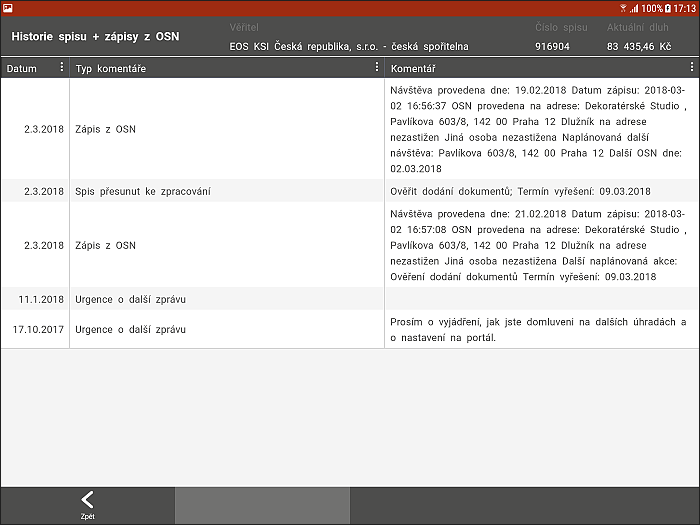
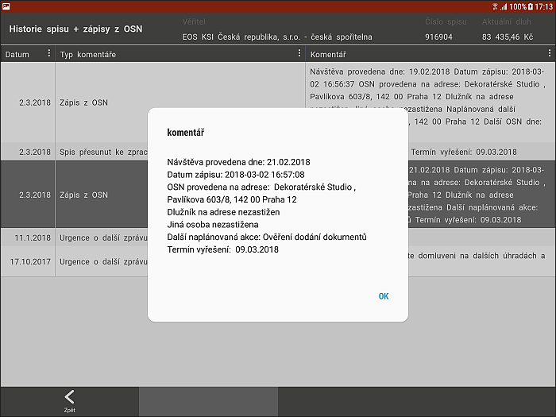

Podzáložka - HISTORIE SPISU + ZÁPISY Z OSN

V této podzáložce jsou vypsány všechny změny, které se na spise provedou. IP se může vrátit k provedeným zápisům, ověřit změnu čísla atd.
Pole jsou needitovatelná, pouze v informativním zobrazení. Doplnění informací vychází vždy z procesů. V záložce HISTORIE SPISU lze filtrovat, vyhledávat a třídit dle data, typu či komentáře.
Řádka každého zápisu je i proklikem, kliknutím se zobrazí daná položka v dialogovém okně.
